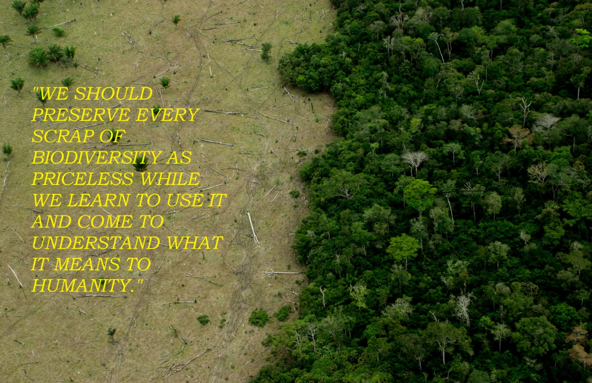

Biodiversity starts in the distant past and it points toward the future.
The value of biodiversity is that it makes our ecosystems more resilient, which is a prerequisite for stable societies; its wanton destruction is akin to setting fire to our lifeboat.
|  | What is biodiversity loss? Biodiversity loss is the extinction of species (plant or animal) worldwide, and also the local reduction or loss of species in a certain habitat. |
CAUSES:-
Major factors for biotic stress and the ensuing accelerating loss rate are, amongst other threats:
1.Habitat loss and degradation
Land use intensification (and ensuing land loss/habitat loss) has been identified to be a significant factor in loss of ecological services due to direct effects as well as biodiversity loss.
2.Climate change through heat stress and drought stress.
3.Excessive nutrient load and other forms of pollution.
4.Over-exploitation and unsustainable use (e.g. unsustainable fishing methods) we are currently using 25% more natural resources than the planet.
5.Armed conflict, which disrupts human livelihoods and institutions, contributes to habitat loss, and intensifies over-exploitation of economically valuable species, leading to population declines and local extinctions.
6.Invasive alien species that effectively compete for a niche, replacing indigenous species.
7.Human activity has left the Earth struggling to sustain life, due to the demands humans have. As well as leaving around 30% of mammal, amphibian, and bird species endangered.
EFFECTS:-
Insect Loss:-
In 2017, various publications describe the dramatic reduction in absolute insect biomass and number of species in Germany and North America over a period of 27 years.As possible reasons for the decline, the authors highlight neonicotinoids and other agrochemicals. Writing in the journal PLOS One, Hallman et al. (2017) conclude that "the widespread insect biomass decline is alarming."
Birds loss:-
Certain types of pesticides named Neonicotinoids probably contributing to decline of certain bird species.
Food and agriculture:-
In 2019, the UN's Food and Agriculture Organization produced its first report on The State of the World’s Biodiversity for Food and Agriculture. This warned that "Many key components of biodiversity for food and agriculture at genetic, species and ecosystem levels are in decline."The 2019 IPBES Global Assessment Report on Biodiversity and Ecosystem Services asserts that industrial farming is a significant factor in collapsing biodiversity. The health of humans is largely dependent on the product of an ecosystem. With biodiversity loss, a huge impact on human health comes as well. Biodiversity makes it possible for humans to have a sustainable level of soils and the means to have the genetic factors in order to have food.
WHAT WE CAN DO?
We can participate in biodiversity conservation by increasing our knowledge of environmental issues, increasing our awareness of the impacts of biodiversity loss, and increasing support for government policies and actions that conserve our valuable ecosystems. We can become educators and role models as stewards of the environment by aiding in the recovery of species at risk and preventing other species from becoming at risk. Habitat Stewardship consists of activities that range from enhancing the quality of soil, water, air and other natural resources to monitoring and conserving wildlife species and their habitat by donating the property to a land trust.
Participating in Biodiversity Conservation:-
1.Identify locations of critical wildlife habitat for species at risk and the threats to these areas. Where possible, eliminate threats and maintain natural areas. Leave critical wildlife habitat undisturbed, especially nesting and denning sites. Promote wildlife use by setting up bird and bat houses.
2.Eradicate and control introduced weeds on your property. Keep vehicles on main roads to reduce the spread of weeds and disturbance to wildlife.
3.Monitor and assess your pets’ impact on biodiversity. Some domestic animals, especially cats, are predators of wild animals and can devastate local population of native species. Cats have been estimated to kill tens of millions of birds each year in North America.
4.Leave native plants undisturbed, and landscape using native trees and vegetation. Native plants are well adapted to local conditions and provide a low maintenance, drought resistant garden and can prevent local flooding. Attract “good” insects by planting pollen and nectar plants.
5.Maintain wetlands by conserving water and reducing irrigation. Avoid draining water bodies on your property.
6.Construct fences to protect riparian areas and other sensitive habitats from trampling and other disturbances.
7.Manage livestock grazing to maintain good quality range conditions. Leave some areas ungrazed to determine range characteristics to manage for.
8.Maintain old standing dead trees and mature forest stands. Large dead trees provide nest cavities for many species and the mature forest will be replaced by old growth over time.
9.Consider donating property to land trusts, or placing a conservation covenant on your property. This process allows you to protect your land and benefit from potential tax breaks. Under Environment and Climate Change Canada’s Ecological Gifts program, a gift of land provides the greatest tax benefit of any charitable gift.
10.Use natural products and methods for pest control such as BT (Bacillus thuringiensis) for caterpillar infestation; use pesticides that have minimal residual effects such as pyrethrins, insecticidal soaps, and dormant oil sprays; use a high-pressure water stream from a hose to control aphids; use barriers and collars around plants to keep pests away.
11.Learn as much as you can about nature and share your knowledge with others. Visit ecological interpretation centres, natural history museums, and native fish hatcheries to study local ecosystems. Volunteer at an organization that focuses on conservation or restoration of habitat.
12.Encourage and support local government initiatives that protect habitat and decrease threats to biodiversity.
13.Use environmentally friendly products. Dispose of hazardous material safely. Chemicals that enter the sewer system can contaminate freshwater and ocean ecosystems.
14.Recycle, reuse and reduce. Recycling decreases pollution by decreasing energy, electricity, and water consumption and the need for landfills.
15.Drive less, walk, ride or carpool more. Learn about low emission vehicle research and availability.